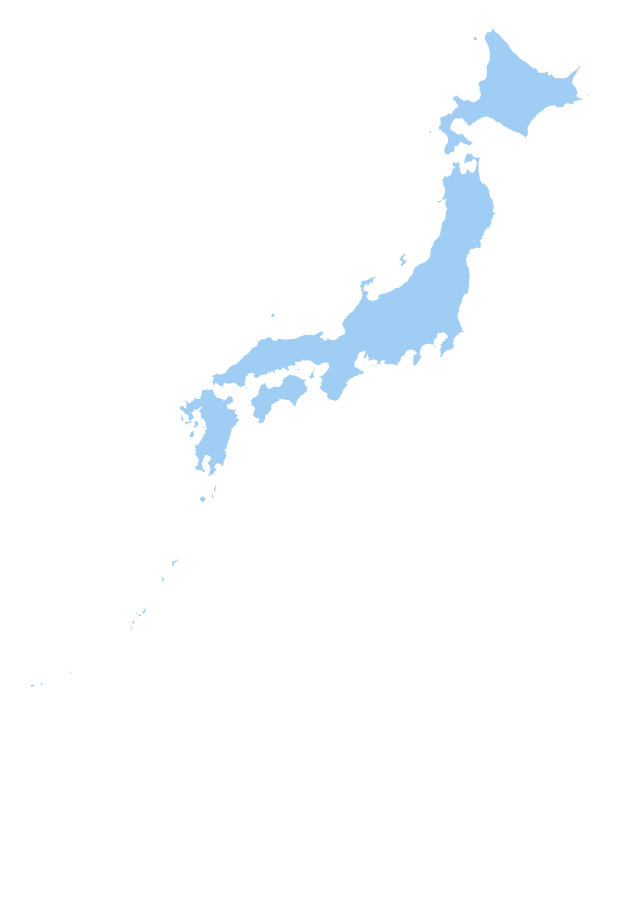

LOCAL SUPPORT CENTERS
지역별 사업승계 지원센터
일본 전역의 공식 지원센터 정보를 지역별로 확인하세요.
47개 도도부현을 연결합니다.
지도는 지역별 지원 정보를 확인하기 위한 시각 자료입니다. 아래 목록에서 권역 및 도도부현을 검색할 수 있습니다.

LOCAL SUPPORT CENTERS
일본 전역의 공식 지원센터 정보를 지역별로 확인하세요.
지도는 지역별 지원 정보를 확인하기 위한 시각 자료입니다. 아래 목록에서 권역 및 도도부현을 검색할 수 있습니다.
